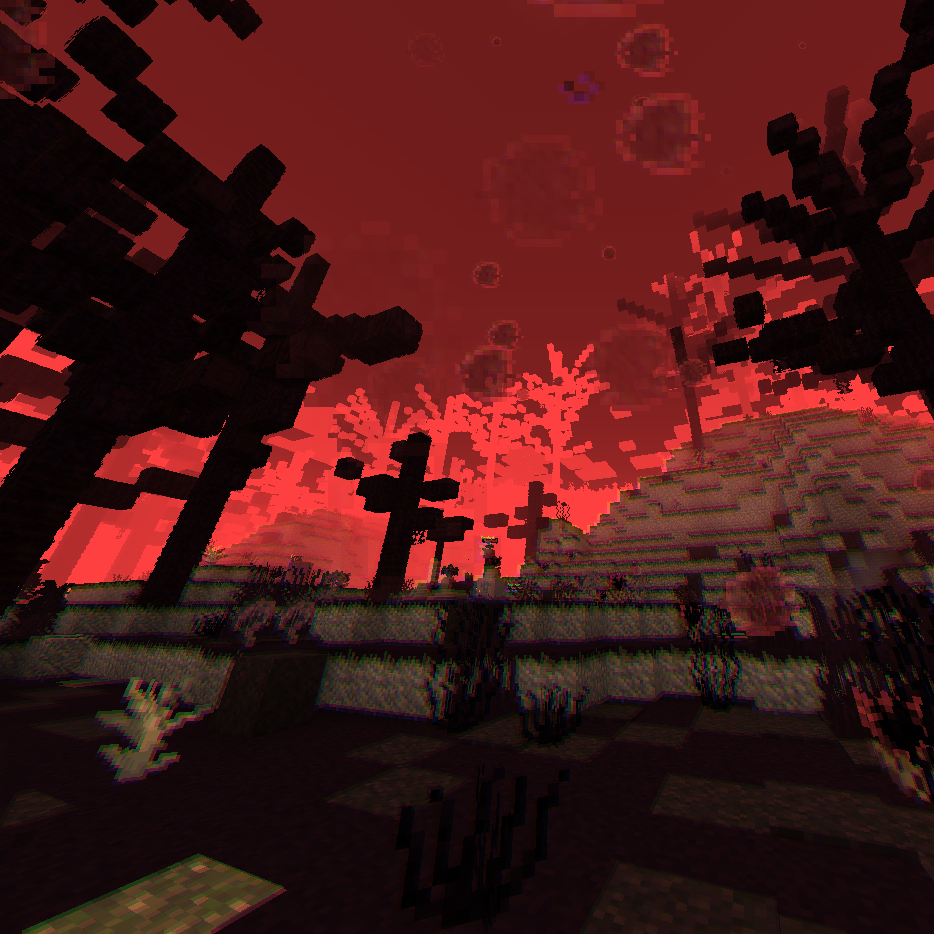
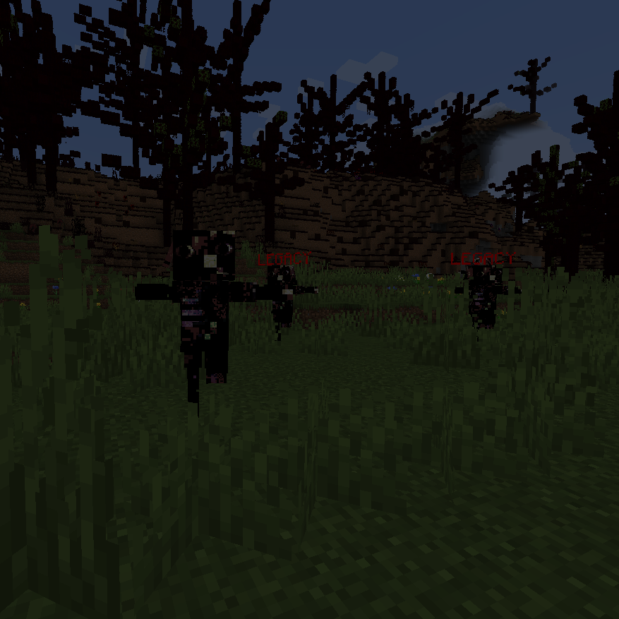
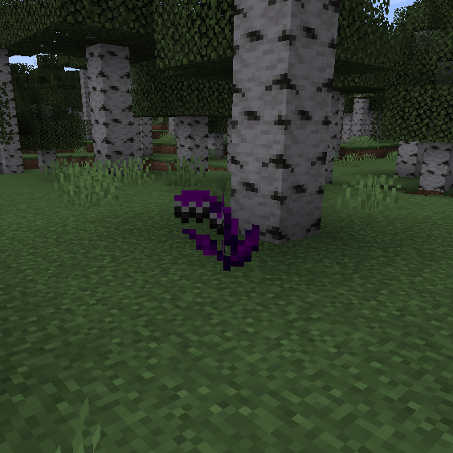
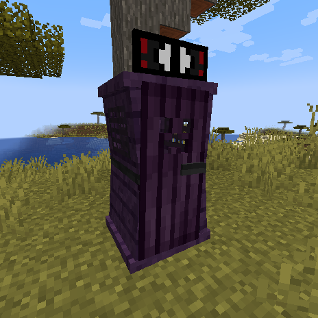
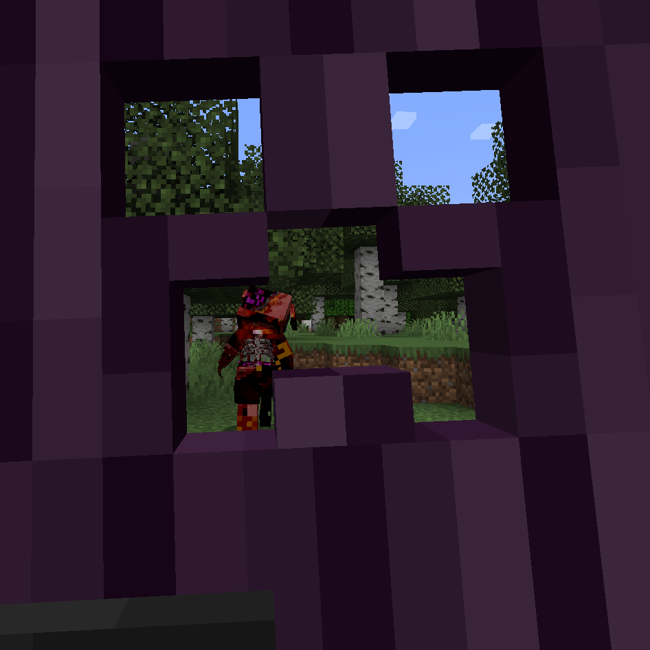
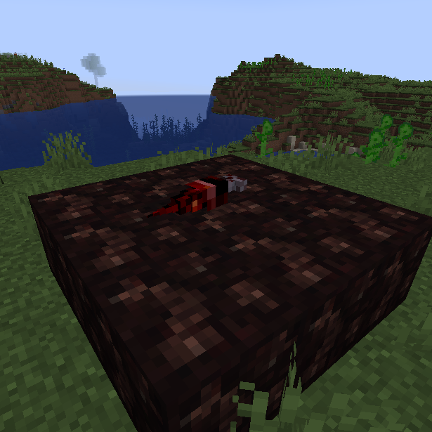
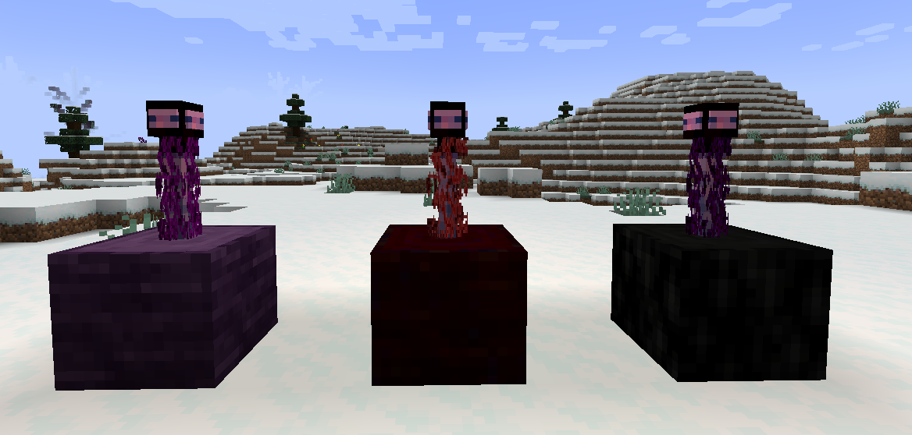
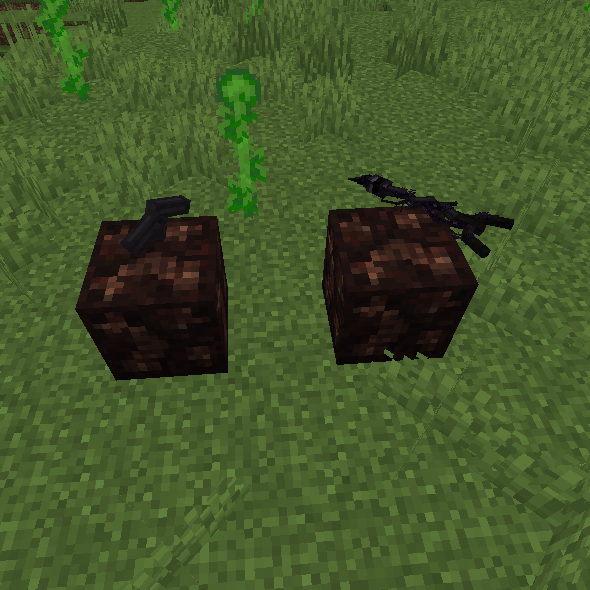
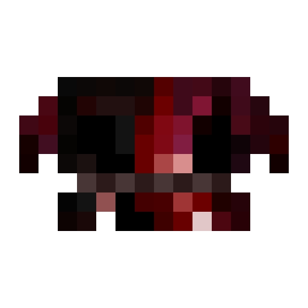
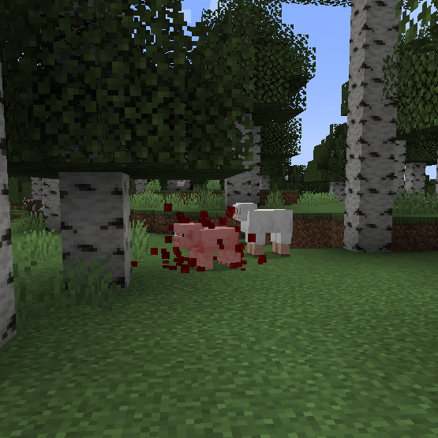

Global Impact
DESCRIPTION
People think that this whole corrupt quarantine thing is something "contained" or "associated" with valleys and spores.
But recent studies claim to have discovered that microscopic spores are everywhere, and these are not only bad for the physical/mental health of those who inhale them. They have also caused damage to animals, crops, etc.
In the case of mental health, we already have some documented cases of people who have suffered from effects derived from paranoia or anxiety. According to their descriptions, these are the symptoms of each:

Paranoia:
- A loud noise capable of startling you.
- A feeling that leaves you completely unsettled.
- A cacophony of sounds everywhere.
- In most cases, you may see a lot of things that do not exist in that situation (images, texts, etc.).
- A thick fog that comes and goes, as if to intensify the effect.
- Dizziness and even vertigo.

Anguish:
- Feeling of pressure or heaviness
- Intensified heartbeat
- Feeling of tiredness
- Feeling of not fitting in (and surely some kind of frustration related to this)
- Some have even experienced hallucinations of something or someone constantly harassing them in a blatant way.

It's important to stay medicated to avoid even worse consequences.
VEGETATION
Several reports mention certain purple flowers scattered around the world, which are usually curved and resemble feathers. These plants were named "Corruptiny" due to their ability to spread and generate "Corrupt Spores." These plants are actually failed attempts by the "Ominous Valley" to expand with its roots, thus creating these flowers. If you see any that are not within an "Ominous Valley," it is best to pull them out as soon as possible, as they can cause many problems if they spread too far. Who knows what might happen?

RESEARCH ADVANCES
These kinds of... urinals? Let's just call them "Anti-Monster Stations." They have been found in many places. They are most commonly found in the Ominous Valleys and the Hazed Plains. Not only that, but they serve to make entities lose sight of you, but keep in mind that not all of them are affected. The strangest case is that of "Deadtime Jones," as he often loses sight of you, but if he somehow manages to see you enter one, he will destroy it.


Our researchers have been experimenting with the capabilities of the "Corrupted Arm." Although it does not have many uses, the best use they have found for it is a creation they have decided to call the "Paranoia-Consumer Rod," a rod that, when placed on top of certain logs, will perform one function or another. If the log beneath it is "Ominous," it will be able to highlight corrupt entities; if the log is "Hazed," it will dispel any Rottenmorphen nearby; finally, if the wood is "Sinned," it will reveal any Sinber nearby.


Finally, they have found a kind of enhancer that does not seem to be very useful either, at least according to the tests they have carried out so far. The most incredible thing (if it can be described as such) has been a sword made up of a "Hornbranch" and a "Corrupted Arm" fused together by this enhancer, giving us a kind of weapon that looks more like an aberration than anything else. It is quite strong but not very resistant, and something curious is that if you use it in your other hand and load it with "Corrupted Snowballs," it will shoot them at high speed, which not only adds the effect but also causes more damage. Similarly, I feel that it is still a fairly useless item compared to other discoveries.

MUSIC
These tracks will play when Deadtime Jones has found you |
KNOWN THREATS
DEADTIME JONES

This creature has been reported in many cases and has even been considered a larva or parasite.
It tends to hide inside the corpses of its victims and wait for someone to reveal it so it can begin its hunt. However, there does not always have to be someone to reveal it, as if it gets tired, it will come out on its own voluntarily.
This announcement is important for anyone who comes into contact with an unfamiliar living being. If the being near you exhibits any of these symptoms (unusual breathing, bleeding, blank stares, or uncomfortable approaches), get rid of it as soon as possible. If that "thing" escapes, your only chance will be once you catch it.

Notice how the pig is the one infected in this photo.
(The fact that we used a pig
doesn't mean that HE can only hide on those...)